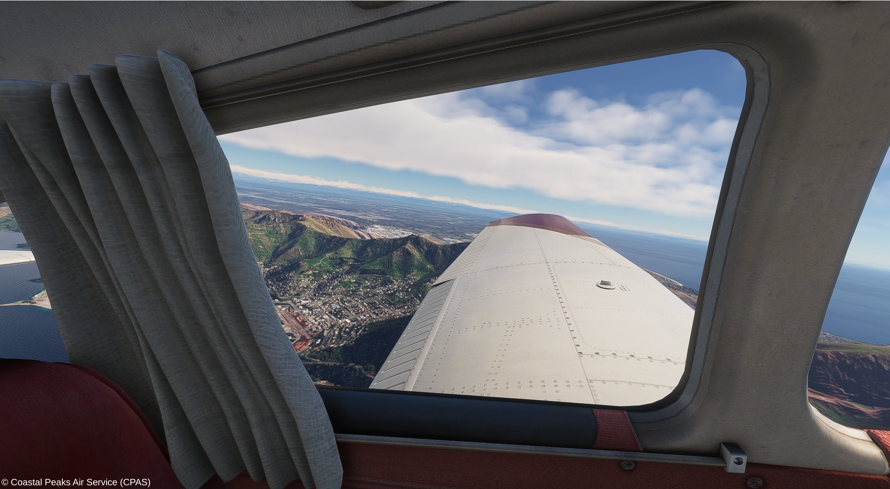

Linking the Garden City to the West Coast
Virtual Charter (VC) & Specialty Flight Operations
Join Our Virtual CharterLinking the Garden City to the West Coast
Virtual Charter (VC) & Specialty Flight Operations
Join Our Virtual CharterCoastal Peaks Air Service (CPAS), established on December 19, 2025, is a Virtual Charter (VC) and specialty flight operator for Microsoft Flight Simulator. We operate general aviation aircraft and helicopters for tours, charters, and HEMS missions, flying realistic routes across New Zealand's South Island. Our flights cover Canterbury, Christchurch, Banks Peninsula, and the dramatic landscapes of the West Coast and Southern Alps, offering an experience distinct from traditional virtual airlines.

Christchurch International Airport (NZCH)
Christchurch International Airport (NZCH)
Mount Cook Airport (NZMC/NZGT) & Glentanner Station
Specializing in glacier heli-hike tours and alpine operations
Please ensure all sections of the application template are completed before submission.